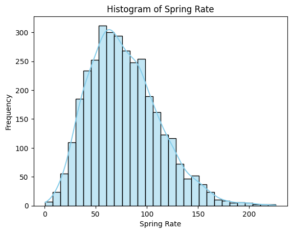
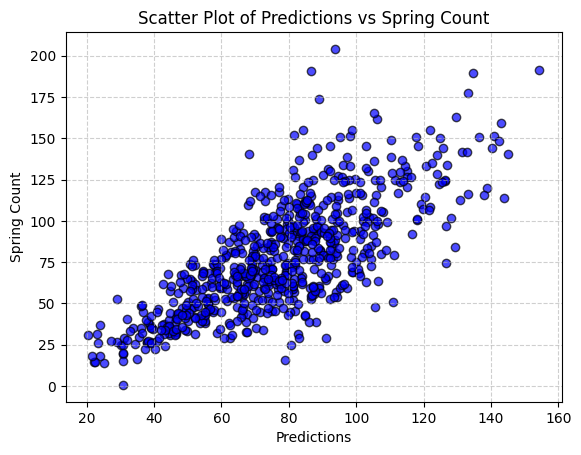

from google.colab import drive
drive.mount('/content/drive')Mounted at /content/drivefrom google.colab import drive
drive.mount('/content/drive')Mounted at /content/driveimport numpy as np
import pandas as pd
import geopandas as gpd
import seaborn as sns
import matplotlib.pyplot as plt
from sklearn.model_selection import train_test_split
from sklearn.svm import SVR
from sklearn.metrics import mean_squared_error, r2_score, mean_absolute_error
from sklearn.preprocessing import StandardScaler
from sklearn.linear_model import LinearRegression
from sklearn.ensemble import RandomForestRegressor
import tensorflow as tf
from scipy.stats import norm
import warnings
warnings.filterwarnings('ignore')PA_Final = pd.read_csv('/content/drive/MyDrive/PA_Final.csv')PA_Final.columnsIndex(['CountyName', 'LocationName', 'Asthma', 'TotalPopulation',
'TotalPop18plus', 'COP', 'GEOID', 'Smoking', 'Drinking', 'Short_Sleep',
'Physical_Activity', 'neighbor_avg_density', 'minority', 'aging',
'disability', 'forest_total', 'wetland_total', 'Hdensity_total',
'Ldensity_total', 'grasses_total', 'water_total', 'forest_pct',
'Hdensity_pct', 'lst_winter', 'ndvi_fall', 'evi_spring', 'evi_fall',
'savi_fall', 'savi_winter', 'savi_summer', 'savi_spring', 'ndvi_winter',
'lst_summer', 'evi_summer', 'lst_spring', 'lst_fall', 'ndvi_spring',
'ndvi_summer', 'evi_winter'],
dtype='object')The COPD exacerbation rate was higher in winter (0.13 exacerbations/person-month) than in spring, summer, and fall (0.11, 0.079, and 0.10 exacerbations/person-month, respectively) (P < 0.001). Summer had the highest proportion of severe exacerbations (40.5%) compared with spring, fall, and winter (32.6%, 34.7%, and 33.1%, respectively) (P = 0.004).
def calculate_seasonal_exacerbations_df(df, total_column, seasonal_rates):
"""
Apply the seasonal exacerbation calculation to a DataFrame column containing total exacerbations.
:param df: The DataFrame containing the total exacerbations column
:param total_column: The name of the column containing total exacerbations for each tract
:param seasonal_rates: Dictionary with seasonal rates for each season (winter, spring, summer, fall)
:return: The DataFrame with new columns for seasonal exacerbations
"""
# Normalize the seasonal rates
total_rate = sum(seasonal_rates.values())
normalized_rates = {season: rate / total_rate for season, rate in seasonal_rates.items()}
# Calculate seasonal exacerbations for each row in the DataFrame
for season, rate in normalized_rates.items():
df[f'{season}_count'] = df[total_column] * rate
df[f'{season}_rate'] = df[f'{season}_count'] / df['TotalPopulation'] * 100
return dfseasonal_rates = {
'winter': 0.39, # Winter rate
'spring': 0.33, # Spring rate
'summer': 0.237, # Summer rate
'fall': 0.30 # Fall rate
}
PA_Final["COP_People"] = PA_Final["COP"] / 100 * PA_Final["TotalPopulation"]
PA_Final = calculate_seasonal_exacerbations_df(PA_Final, 'COP_People', seasonal_rates)PA_Final.columnsIndex(['CountyName', 'LocationName', 'Asthma', 'TotalPopulation',
'TotalPop18plus', 'COP', 'GEOID', 'Smoking', 'Drinking', 'Short_Sleep',
'Physical_Activity', 'neighbor_avg_density', 'minority', 'aging',
'disability', 'forest_total', 'wetland_total', 'Hdensity_total',
'Ldensity_total', 'grasses_total', 'water_total', 'forest_pct',
'Hdensity_pct', 'lst_winter', 'ndvi_fall', 'evi_spring', 'evi_fall',
'savi_fall', 'savi_winter', 'savi_summer', 'savi_spring', 'ndvi_winter',
'lst_summer', 'evi_summer', 'lst_spring', 'lst_fall', 'ndvi_spring',
'ndvi_summer', 'evi_winter', 'COP_People', 'winter_count',
'winter_rate', 'spring_count', 'spring_rate', 'summer_count',
'summer_rate', 'fall_count', 'fall_rate'],
dtype='object')# spring dataframe
PA_Spring = PA_Final[['CountyName', 'Asthma', 'TotalPopulation', 'COP', 'GEOID', 'Smoking',
'Drinking', 'Short_Sleep', 'Physical_Activity', 'neighbor_avg_density',
'minority', 'aging', 'disability', 'forest_total', 'wetland_total', 'Hdensity_total',
'Ldensity_total', 'grasses_total', 'water_total', 'forest_pct', 'Hdensity_pct',
'evi_spring','lst_spring', 'ndvi_spring', 'savi_spring', 'spring_count', "spring_rate"]]# summer dataframe
PA_Summer = PA_Final[['CountyName', 'Asthma', 'TotalPopulation', 'COP', 'GEOID', 'Smoking',
'Drinking', 'Short_Sleep', 'Physical_Activity', 'neighbor_avg_density',
'minority', 'aging', 'disability', 'forest_total', 'wetland_total', 'Hdensity_total',
'Ldensity_total', 'grasses_total', 'water_total', 'forest_pct', 'Hdensity_pct',
'evi_summer','lst_summer', 'ndvi_summer', 'savi_summer', 'summer_count', "summer_rate"]]# fall dataframe
PA_Fall = PA_Final[['CountyName', 'Asthma', 'TotalPopulation', 'COP', 'GEOID', 'Smoking',
'Drinking', 'Short_Sleep', 'Physical_Activity', 'neighbor_avg_density',
'minority', 'aging', 'disability', 'forest_total', 'wetland_total', 'Hdensity_total',
'Ldensity_total', 'grasses_total', 'water_total', 'forest_pct', 'Hdensity_pct',
'evi_fall','lst_fall', 'ndvi_fall', 'savi_fall', 'fall_count', "fall_rate"]]# winter dataframe
PA_Winter = PA_Final[['CountyName', 'Asthma', 'TotalPopulation', 'COP', 'GEOID', 'Smoking',
'Drinking', 'Short_Sleep', 'Physical_Activity', 'neighbor_avg_density',
'minority', 'aging', 'disability', 'forest_total', 'wetland_total', 'Hdensity_total',
'Ldensity_total', 'grasses_total', 'water_total', 'forest_pct', 'Hdensity_pct',
'evi_winter','lst_winter', 'ndvi_winter', 'savi_winter', 'winter_count', "winter_rate"]]sns.histplot(PA_Spring['spring_count'], bins=30, kde=True, color='skyblue')
plt.title('Histogram of Spring Rate')
plt.xlabel('Spring Rate')
plt.ylabel('Frequency')
plt.show()
# attempt to reduce dimensionality
feature_columns = ['Smoking', 'Drinking', 'Short_Sleep', 'Physical_Activity', 'neighbor_avg_density',
'minority', 'aging', 'disability', 'forest_total', 'wetland_total', 'Hdensity_total',
'Ldensity_total', 'grasses_total', 'water_total', 'forest_pct', 'Hdensity_pct',
'evi_spring','lst_spring', 'ndvi_spring', 'savi_spring']
target_column = "spring_rate"
X = PA_Spring[feature_columns]
y = PA_Spring[target_column]def calculate_bic(y_true, y_pred, n, p):
"""Calculate Bayesian Information Criterion (BIC)."""
mse = mean_squared_error(y_true, y_pred)
return n * np.log(mse) + p * np.log(n)
# Step 1: Fit the full model
full_model = LinearRegression().fit(X, y)
y_pred_full = full_model.predict(X)
n_samples = len(y)
p_predictors = X.shape[1]
bic_full = calculate_bic(y, y_pred_full, n_samples, p_predictors)
# Step 2: Perform backward elimination
selected_predictors = list(X.columns)
selected_bic = bic_full
while True:
best_bic = selected_bic
best_predictors = selected_predictors
for predictor in selected_predictors:
predictors_subset = selected_predictors.copy()
predictors_subset.remove(predictor)
X_subset = X[predictors_subset]
model = LinearRegression().fit(X_subset, y)
y_pred_subset = model.predict(X_subset)
bic = calculate_bic(y, y_pred_subset, n_samples, len(predictors_subset))
if bic < best_bic:
best_bic = bic
best_predictors = predictors_subset
if best_bic < selected_bic:
selected_bic = best_bic
selected_predictors = best_predictors
else:
break
# Print the selected predictors and their BIC
print("Selected predictors:", selected_predictors)
print("BIC:", selected_bic)Selected predictors: ['Smoking', 'Drinking', 'Short_Sleep', 'Physical_Activity', 'minority', 'aging', 'disability', 'forest_total', 'Ldensity_total', 'grasses_total', 'forest_pct', 'lst_spring']
BIC: -12292.878498899865def split_and_scale_data(X, y, stratify_col, test_size=0.2, random_state=42):
"""
Splits the data into train and test sets, and applies scaling.
Parameters:
X (DataFrame): Feature matrix.
y (Series): Target variable.
stratify_col (Series): Column to stratify by.
test_size (float): Proportion of data to include in the test split.
random_state (int): Seed for reproducibility.
Returns:
X_train_scaled, X_test_scaled, y_train, y_test (arrays): Scaled feature splits and target splits.
scaler (StandardScaler): Fitted scaler for future use.
"""
# Split the data
X_train, X_test, y_train, y_test = train_test_split(
X, y, test_size=test_size, random_state=random_state, stratify=stratify_col
)
# Scale the data
scaler = StandardScaler()
X_train_scaled = scaler.fit_transform(X_train)
X_test_scaled = scaler.transform(X_test)
return X_train_scaled, X_test_scaled, y_train, y_test, scalerdef train_and_evaluate_rf(X_train, X_test, y_train, y_test, feature_names, n_estimators=100, random_state=42):
"""
Trains a Random Forest Regressor and evaluates its performance.
Parameters:
X_train, X_test, y_train, y_test (arrays): Train-test split data.
feature_names (list): List of feature names for feature importance.
n_estimators (int): Number of trees in the forest.
random_state (int): Seed for reproducibility.
Returns:
results (dict): Dictionary containing predictions, metrics, and feature importances.
"""
# Train the Random Forest model
rf_model = RandomForestRegressor(n_estimators=n_estimators, random_state=random_state)
rf_model.fit(X_train, y_train)
# Make predictions
predictions_rf = rf_model.predict(X_test)
# Calculate metrics
mse_rf = mean_squared_error(y_test, predictions_rf)
rmse_rf = np.sqrt(mse_rf)
r2_rf = r2_score(y_test, predictions_rf)
mae_rf = mean_absolute_error(y_test, predictions_rf)
# Compute feature importances
feature_importances = rf_model.feature_importances_
importance_df = pd.DataFrame({
'Feature': feature_names,
'Importance': feature_importances
}).sort_values(by='Importance', ascending=False)
return {
'predictions': predictions_rf,
'rmse': rmse_rf,
'r2': r2_rf,
'importance_df': importance_df
}def extract_results(results, method_name):
"""
Extract r2, rmse, and top 5 feature importances from the result of a Random Forest model.
Parameters:
results (dict): Result from the train_and_evaluate_rf function.
method_name (str): Identifier for the method used (e.g., "sp_all", "sp_bic", etc.).
Returns:
metrics (list): List containing RMSE and R².
top_features (list): List of top 5 features.
"""
# Extract metrics
metrics = [results['rmse'], results['r2']]
# Extract top 5 features
top_features = results['importance_df']['Feature'].head(5).tolist()
return metrics, top_features# using all variables
stratify_col = PA_Spring['CountyName']
X_Spring_All = PA_Spring[['Smoking', 'Drinking', 'Short_Sleep', 'Physical_Activity', 'neighbor_avg_density',
'minority', 'aging', 'disability', 'forest_total', 'wetland_total', 'Hdensity_total',
'Ldensity_total', 'grasses_total', 'water_total', 'forest_pct', 'Hdensity_pct',
'evi_spring','lst_spring', 'ndvi_spring', 'savi_spring']]
y_Spring = PA_Spring[['spring_count']]
X_train_scaled, X_test_scaled, y_train, y_test_sp, scaler = split_and_scale_data(X_Spring_All, y_Spring, stratify_col)
spring_result = train_and_evaluate_rf(X_train_scaled, X_test_scaled, y_train, y_test_sp, X_Spring_All.columns)# using all variables after dimensionality reduction
X_Spring_BIC = PA_Spring[['Smoking', 'Drinking', 'Short_Sleep', 'Physical_Activity', 'minority', 'aging', 'disability', 'forest_total', 'Ldensity_total', 'grasses_total', 'forest_pct', 'lst_spring']]
X_train_scaled, X_test_scaled, y_train, y_test_sp, scaler = split_and_scale_data(X_Spring_BIC, y_Spring, stratify_col)
spring_result_BIC = train_and_evaluate_rf(X_train_scaled, X_test_scaled, y_train, y_test_sp, X_Spring_BIC.columns)# using all environmental predictors
X_Spring_Env = PA_Spring[['forest_total', 'wetland_total', 'Hdensity_total',
'Ldensity_total', 'grasses_total', 'water_total', 'forest_pct', 'Hdensity_pct',
'evi_spring','lst_spring', 'ndvi_spring', 'savi_spring']]
X_train_scaled, X_test_scaled, y_train, y_test_sp, scaler = split_and_scale_data(X_Spring_Env, y_Spring, stratify_col)
spring_result_env = train_and_evaluate_rf(X_train_scaled, X_test_scaled, y_train, y_test_sp, X_Spring_Env.columns)# using all socio-behavioral predictors
X_Spring_Sol = PA_Spring[['Smoking', 'Drinking', 'Short_Sleep', 'Physical_Activity', 'neighbor_avg_density',
'minority', 'aging', 'disability']]
X_train_scaled, X_test_scaled, y_train, y_test_sp, scaler = split_and_scale_data(X_Spring_Sol, y_Spring, stratify_col)
spring_result_sol = train_and_evaluate_rf(X_train_scaled, X_test_scaled, y_train, y_test_sp, X_Spring_Sol.columns)# using all variables
stratify_col = PA_Summer['CountyName']
X_Summer_All = PA_Summer[['Smoking', 'Drinking', 'Short_Sleep', 'Physical_Activity', 'neighbor_avg_density',
'minority', 'aging', 'disability', 'forest_total', 'wetland_total', 'Hdensity_total',
'Ldensity_total', 'grasses_total', 'water_total', 'forest_pct', 'Hdensity_pct',
'evi_summer','lst_summer', 'ndvi_summer', 'savi_summer']]
y_Summer = PA_Summer[['summer_count']]
X_train_scaled, X_test_scaled, y_train, y_test_su, scaler = split_and_scale_data(X_Summer_All, y_Summer, stratify_col)
summer_result = train_and_evaluate_rf(X_train_scaled, X_test_scaled, y_train, y_test_su, X_Summer_All.columns)# using all variables after dimensionality reduction
X_Summer_BIC = PA_Summer[['Smoking', 'Drinking', 'Short_Sleep', 'Physical_Activity', 'minority', 'aging', 'disability', 'forest_total', 'Ldensity_total', 'grasses_total', 'forest_pct', 'lst_summer']]
X_train_scaled, X_test_scaled, y_train, y_test_su, scaler = split_and_scale_data(X_Summer_BIC, y_Summer, stratify_col)
summer_result_BIC = train_and_evaluate_rf(X_train_scaled, X_test_scaled, y_train, y_test_su, X_Summer_BIC.columns)# using only environment variables
X_Summer_Env = PA_Summer[['forest_total', 'wetland_total', 'Hdensity_total',
'Ldensity_total', 'grasses_total', 'water_total', 'forest_pct', 'Hdensity_pct',
'evi_summer','lst_summer', 'ndvi_summer', 'savi_summer']]
X_train_scaled, X_test_scaled, y_train, y_test_su, scaler = split_and_scale_data(X_Summer_Env, y_Summer, stratify_col)
summer_result_env = train_and_evaluate_rf(X_train_scaled, X_test_scaled, y_train, y_test_su, X_Summer_Env.columns)# using only social behavorial variables
X_Summer_Sol = PA_Summer[['Smoking', 'Drinking', 'Short_Sleep', 'Physical_Activity', 'neighbor_avg_density',
'minority', 'aging', 'disability']]
X_train_scaled, X_test_scaled, y_train, y_test_su, scaler = split_and_scale_data(X_Summer_Sol, y_Summer, stratify_col)
summer_result_sol = train_and_evaluate_rf(X_train_scaled, X_test_scaled, y_train, y_test_su, X_Summer_Sol.columns)# using all variables
stratify_col = PA_Fall['CountyName']
X_Fall_All = PA_Fall[['Smoking', 'Drinking', 'Short_Sleep', 'Physical_Activity', 'neighbor_avg_density',
'minority', 'aging', 'disability', 'forest_total', 'wetland_total', 'Hdensity_total',
'Ldensity_total', 'grasses_total', 'water_total', 'forest_pct', 'Hdensity_pct',
'evi_fall','lst_fall', 'ndvi_fall', 'savi_fall']]
y_Fall = PA_Fall[['fall_count']]
X_train_scaled, X_test_scaled, y_train, y_test_fa, scaler = split_and_scale_data(X_Fall_All, y_Fall, stratify_col)
fall_result = train_and_evaluate_rf(X_train_scaled, X_test_scaled, y_train, y_test_fa, X_Fall_All.columns)# using all variables after dimensionality reduction
X_Fall_BIC = PA_Fall[['Smoking', 'Drinking', 'Short_Sleep', 'Physical_Activity', 'minority', 'aging', 'disability', 'forest_total', 'Ldensity_total', 'grasses_total', 'forest_pct', 'lst_fall']]
X_train_scaled, X_test_scaled, y_train, y_test_fa, scaler = split_and_scale_data(X_Fall_BIC, y_Fall, stratify_col)
fall_result_BIC = train_and_evaluate_rf(X_train_scaled, X_test_scaled, y_train, y_test_fa, X_Fall_BIC.columns)# using only environment variables
X_Fall_Env = PA_Fall[['forest_total', 'wetland_total', 'Hdensity_total',
'Ldensity_total', 'grasses_total', 'water_total', 'forest_pct', 'Hdensity_pct',
'evi_fall','lst_fall', 'ndvi_fall', 'savi_fall']]
X_train_scaled, X_test_scaled, y_train, y_test_fa, scaler = split_and_scale_data(X_Fall_Env, y_Fall, stratify_col)
fall_result_env = train_and_evaluate_rf(X_train_scaled, X_test_scaled, y_train, y_test_fa, X_Fall_Env.columns)# using only social behavorial variables
X_Fall_Sol = PA_Fall[['Smoking', 'Drinking', 'Short_Sleep', 'Physical_Activity', 'neighbor_avg_density',
'minority', 'aging', 'disability']]
X_train_scaled, X_test_scaled, y_train, y_test_fa, scaler = split_and_scale_data(X_Fall_Sol, y_Fall, stratify_col)
fall_result_sol = train_and_evaluate_rf(X_train_scaled, X_test_scaled, y_train, y_test_fa, X_Fall_Sol.columns)# using all variables
stratify_col = PA_Winter['CountyName']
X_Winter_All = PA_Winter[['Smoking', 'Drinking', 'Short_Sleep', 'Physical_Activity', 'neighbor_avg_density',
'minority', 'aging', 'disability', 'forest_total', 'wetland_total', 'Hdensity_total',
'Ldensity_total', 'grasses_total', 'water_total', 'forest_pct', 'Hdensity_pct',
'evi_winter','lst_winter', 'ndvi_winter', 'savi_winter']]
y_Winter = PA_Winter[['winter_count']]
X_train_scaled, X_test_scaled, y_train, y_test_wi, scaler = split_and_scale_data(X_Winter_All, y_Winter, stratify_col)
winter_result = train_and_evaluate_rf(X_train_scaled, X_test_scaled, y_train, y_test_wi, X_Winter_All.columns)# using all variables after dimensionality reduction
X_Winter_BIC = PA_Winter[['Smoking', 'Drinking', 'Short_Sleep', 'Physical_Activity', 'minority', 'aging', 'disability', 'forest_total', 'Ldensity_total', 'grasses_total', 'forest_pct', 'lst_winter']]
X_train_scaled, X_test_scaled, y_train, y_test_wi, scaler = split_and_scale_data(X_Winter_BIC, y_Winter, stratify_col)
winter_result_BIC = train_and_evaluate_rf(X_train_scaled, X_test_scaled, y_train, y_test_wi, X_Winter_BIC.columns)# using only environment variables
X_Winter_Env = PA_Winter[['forest_total', 'wetland_total', 'Hdensity_total',
'Ldensity_total', 'grasses_total', 'water_total', 'forest_pct', 'Hdensity_pct',
'evi_winter','lst_winter', 'ndvi_winter', 'savi_winter']]
X_train_scaled, X_test_scaled, y_train, y_test_wi, scaler = split_and_scale_data(X_Winter_Env, y_Winter, stratify_col)
winter_result_env = train_and_evaluate_rf(X_train_scaled, X_test_scaled, y_train, y_test_wi, X_Winter_Env.columns)# using only social behavorial variables
X_Winter_Sol = PA_Winter[['Smoking', 'Drinking', 'Short_Sleep', 'Physical_Activity', 'neighbor_avg_density',
'minority', 'aging', 'disability']]
X_train_scaled, X_test_scaled, y_train, y_test_wi, scaler = split_and_scale_data(X_Winter_Sol, y_Winter, stratify_col)
winter_result_sol = train_and_evaluate_rf(X_train_scaled, X_test_scaled, y_train, y_test_wi, X_Winter_Sol.columns)methods = ['sp_all', 'sp_bic', 'sp_env', 'sp_sol',
'su_all', 'su_bic', 'su_env', 'su_sol',
'fa_all', 'fa_bic', 'fa_env', 'fa_sol',
'wi_all', 'wi_bic', 'wi_env', 'wi_sol']
results = [spring_result, spring_result_BIC, spring_result_env, spring_result_sol,
summer_result, summer_result_BIC, summer_result_env, summer_result_sol,
fall_result, fall_result_BIC, fall_result_env, fall_result_sol,
winter_result, winter_result_BIC, winter_result_env, winter_result_sol
]
metrics_data = {}
top_features_data = {}
for method, result in zip(methods, results):
metrics, top_features = extract_results(result, method)
metrics_data[method] = metrics
top_features_data[method] = top_features
compare_metrics = pd.DataFrame(metrics_data, index=['RMSE', 'R2'])
comapre_top_features = pd.DataFrame(top_features_data, index=[f'Feature {i+1}' for i in range(5)])compare_metrics| sp_all | sp_bic | sp_env | sp_sol | su_all | su_bic | su_env | su_sol | fa_all | fa_bic | fa_env | fa_sol | wi_all | wi_bic | wi_env | wi_sol | |
|---|---|---|---|---|---|---|---|---|---|---|---|---|---|---|---|---|
| RMSE | 22.215634 | 23.125607 | 25.363977 | 28.684670 | 16.041516 | 17.048896 | 18.873498 | 20.608387 | 20.240806 | 21.529757 | 23.914098 | 26.085645 | 26.510291 | 28.301329 | 31.487773 | 33.886914 |
| R2 | 0.561915 | 0.525291 | 0.428948 | 0.269634 | 0.557143 | 0.499776 | 0.386977 | 0.269096 | 0.559970 | 0.502143 | 0.385765 | 0.269148 | 0.553349 | 0.490958 | 0.369879 | 0.270200 |
comapre_top_features| sp_all | sp_bic | sp_env | sp_sol | su_all | su_bic | su_env | su_sol | fa_all | fa_bic | fa_env | fa_sol | wi_all | wi_bic | wi_env | wi_sol | |
|---|---|---|---|---|---|---|---|---|---|---|---|---|---|---|---|---|
| Feature 1 | Hdensity_total | Ldensity_total | Hdensity_total | Physical_Activity | Hdensity_total | Ldensity_total | Hdensity_total | Physical_Activity | Hdensity_total | Ldensity_total | Hdensity_total | Physical_Activity | Hdensity_total | Ldensity_total | Hdensity_total | Physical_Activity |
| Feature 2 | Ldensity_total | Physical_Activity | Ldensity_total | neighbor_avg_density | Ldensity_total | Physical_Activity | Ldensity_total | neighbor_avg_density | Ldensity_total | Physical_Activity | Ldensity_total | neighbor_avg_density | Ldensity_total | Physical_Activity | Ldensity_total | neighbor_avg_density |
| Feature 3 | Physical_Activity | lst_spring | lst_spring | disability | Physical_Activity | lst_summer | ndvi_summer | disability | Physical_Activity | lst_fall | Hdensity_pct | disability | Physical_Activity | forest_total | Hdensity_pct | disability |
| Feature 4 | neighbor_avg_density | forest_total | Hdensity_pct | aging | neighbor_avg_density | Smoking | lst_summer | aging | neighbor_avg_density | Smoking | lst_fall | aging | neighbor_avg_density | Smoking | lst_winter | aging |
| Feature 5 | Smoking | Smoking | ndvi_spring | Smoking | Smoking | minority | Hdensity_pct | Smoking | Smoking | forest_total | ndvi_fall | Smoking | Smoking | minority | ndvi_winter | Smoking |
compare_metrics.to_csv('/content/drive/MyDrive/compare_metrics.csv')
comapre_top_features.to_csv('/content/drive/MyDrive/comapre_top_features.csv')# Create a scatter plot
plt.scatter(spring_result['predictions'], y_test_sp, alpha=0.7, color='blue', edgecolor='black')
plt.title('Scatter Plot of Predictions vs Spring Count')
plt.xlabel('Predictions')
plt.ylabel('Spring Count')
plt.grid(True, linestyle='--', alpha=0.6)
plt.show()
# svm
svm_model = SVR()
svm_model.fit(X_train_scaled, y_train)
predictions_svm = svm_model.predict(X_test_scaled)
mse_svm = mean_squared_error(y_test, predictions_svm)
rmse_svm = np.sqrt(mse_svm)
r2_svm = r2_score(y_test, predictions_svm)
print("RMSE for SVM Spring:", rmse_svm)
print("R-squared for SVM Spring:", r2_svm)# deep learning multiple layer perceptron
model = tf.keras.Sequential([
tf.keras.layers.Dense(128, activation='relu', input_shape=(X_train_scaled.shape[1],)),
tf.keras.layers.Dropout(0.2), # Dropout layer with dropout rate of 0.2
tf.keras.layers.Dense(64, activation='relu'),
tf.keras.layers.Dropout(0.2), # Dropout layer with dropout rate of 0.2
tf.keras.layers.Dense(1) # Output layer
])
model.compile(optimizer='adam', loss='mean_squared_error')
history = model.fit(X_train_scaled, y_train, epochs=50, batch_size=32, validation_split=0.2)
predictions_mlp = model.predict(X_test_scaled)
mse_mlp = mean_squared_error(y_test, predictions_mlp)
rmse_mlp = np.sqrt(mse_mlp)
r2_mlp = r2_score(y_test, predictions_mlp)
print("R-squared for MLP Spring:", r2_mlp)
print("RMSE for MLP Spring:", rmse_mlp)